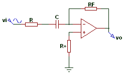

Un filtro paso bajo corresponde a un filtro electrónico caracterizado por permitir el paso de las frecuencias más bajas y atenuar las frecuencias más altas. El filtro requiere de dos terminales de entrada y dos de salida, de una caja negra, también denominada cuadripolo o bipuerto, así todas las frecuencias se pueden presentar a la entrada, pero a la salida solo estarán presentes las que permita pasar el filtro.